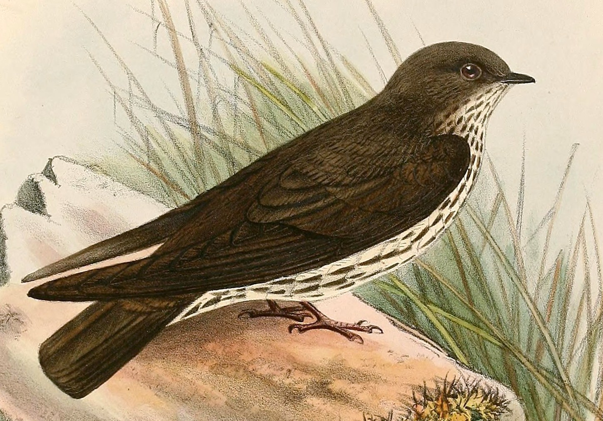
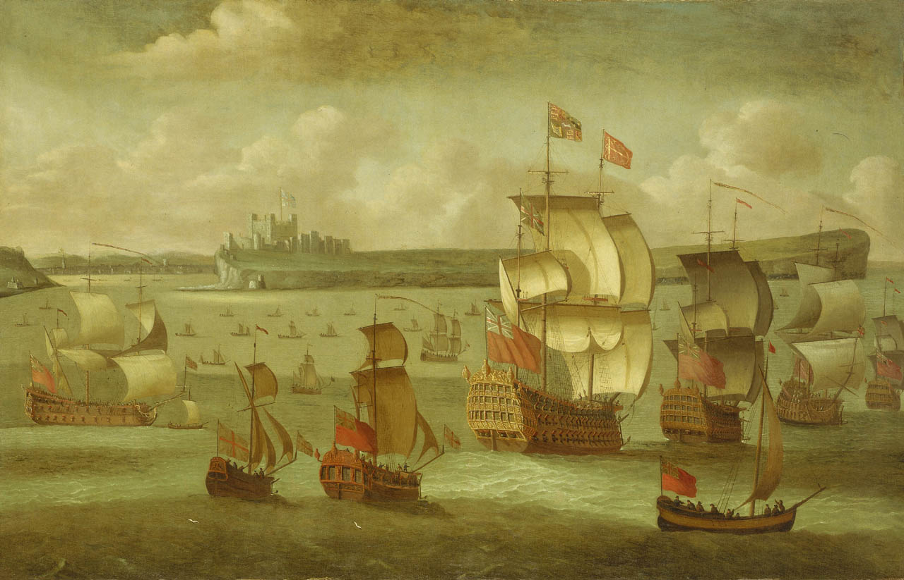
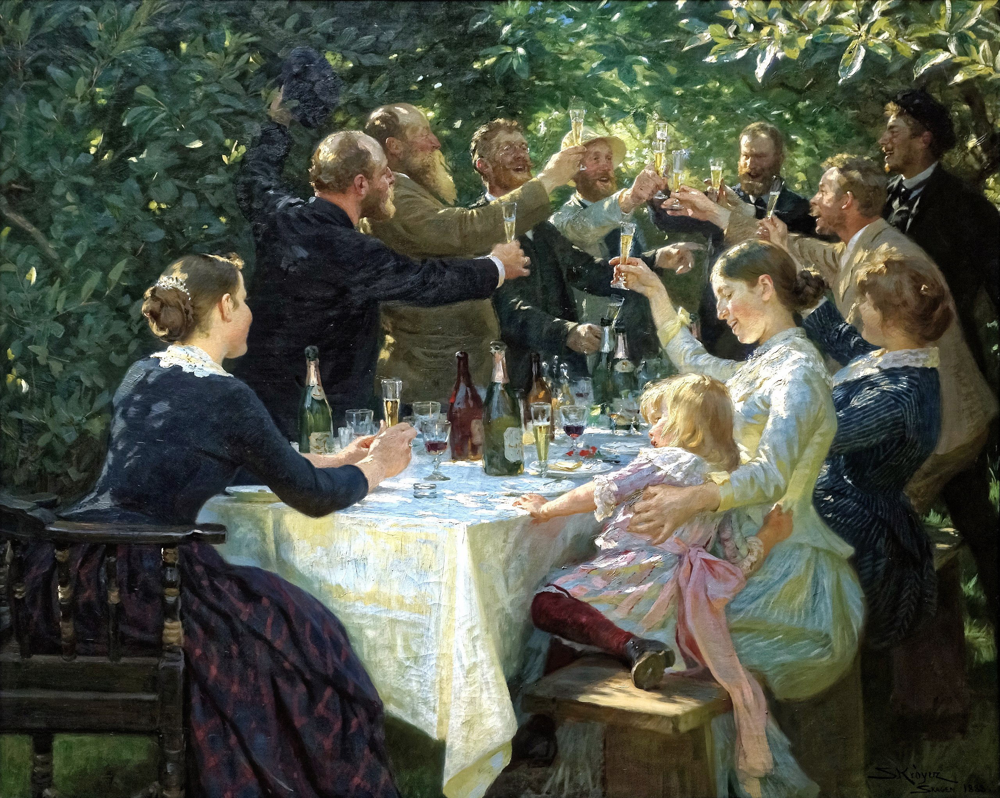

1922 – Antarctic explorer Ernest Shackleton (pictured) died of a heart attack during his final expedition.
1941 – Second World War: Australian and British troops defeated Italian forces in Bardia, Libya, the first battle of the war in which an Australian Army formation took part.
2005 – Eris, the most massive dwarf planet known in the Solar System, was discovered through image analysis by a team at the Palomar Observatory in California.
2007 – The Taiwan High Speed Rail opened, connecting Taipei and Kaohsiung.
2009 – In Eng Foong Ho v Attorney-General, the Court of Appeal of Singapore held that equality before the law was satisfied by a "reasonable nexus" between state action and the object of the law.
Hayao Miyazaki (b. 1941)Bradley Cooper (b. 1975)Deepika Padukone (b. 1986)
More anniversaries: January 4January 5January 6
From today's featured article

Brazza's martin (Phedinopsis brazzae) is a bird in the swallow family with grey-brown upperparts, black-streaked white underparts, and a brownish breast. The sexes are similar, but juveniles have more diffuse breast streaking. Its song is of a series of short notes of increasing frequency, followed by a complex buzz that is sometimes completed by a number of clicks. Its range lies within Angola, the Republic of the Congo, and the Democratic Republic of the Congo. Nesting in burrows in river banks, it lays a clutch of three white eggs. It feeds on flying insects, including termites, and may hunt over rivers or savanna. It forms mixed flocks with other swallows, but is identifiable by its combination of brown upperparts, streaked underparts, and square tail. This little-known bird appears to be common and widespread, and has been listed as a least-concern species since 2008. There may be some hunting of this martin for food, but it does not appear to be facing any serious short-term threats. (Full article...)
Recently featured: Project WalerAlbany Charter half dollarAi-Khanoum
Did you know ...

... that artist Isaac Sailmaker (painting shown) was referred to in contemporary journals and books as "the father of British sea painting"?
... that the audience sometimes heckles defeated sumo wrestlers by throwing zabuton onto the stage at them?
... that while at high school, Johann Georg Seidenbusch declared to Our Lady: "ad carissimam Sponsam te eligo" (I choose thee as my dearest Bride)?
... that Cincinnati hired Louisville's head football coach to replace their own outgoing head coach just days after the two teams were announced as opponents for the 2022 Fenway Bowl?
... that George Jameson was the highest-scoring New Zealand night fighter pilot of World War II?
... that when the former Clarence Hotel in Brighton began to collapse in 1990, the resulting closure of North Street diverted 120 buses per hour in each direction for a week?
... that when serving as Governor of Riau, Soeripto helped found the province's first daily newspaper?
... that Culver City's Measure VY would have allowed 16-year-olds to vote, but it fell short by 16 votes out of over 16,000?
ArchiveStart a new articleNominate an article
Today's featured picture

Hip, Hip, Hurrah! is an oil-on-canvas painting from 1888 by the Danish painter Peder Severin Krøyer. The work shows various members of the Skagen Painters, a group of Danish, Norwegian and Swedish artists who formed a loose community in Skagen, at the northern tip of Jutland, in the 1880s and early 1890s. Krøyer began the painting in 1884 after a party at Michael Ancher's house, with the composition inspired by photographs taken at the celebration by the German artist Fritz Stoltenberg, although the individuals featured are not all the same. A dispute arose between Krøyer and Ancher the following day when the former returned uninvited to continue work on the piece, and although they reconciled Krøyer was not permitted to use Ancher's garden as the setting. The Swedish art collector Pontus Fürstenberg bought the painting before it was completed, and it was displayed at Charlottenborg in 1888. He later donated the work to the Gothenburg Museum of Art, where it has hung since.